Developing for the RSE Extensions
Here you will find a quick overview, via screenshots, of how you checkout the source for the RSE Extensions, and do basic development activity.
Overview
The source for the RSE Extensions is hosted in a Subversion repository under OS/400. The project itself is developed from within WDSC 6.0. To gain access to the source code, you need to first install Subclipse, the Subversion client for WDSC 6.0/Eclipse 3.x. The installation instructions for Subclipse can be found here: http://subclipse.tigris.org/install.html
The rest of this document picks up at the point that you have Subclipse installed and WDSC restarted.
Enable Necessary Capabilities
A new feature in WDSC 6.0 is something called capabilities. This is essentially just way to expose only the functionality that you need. There are a lot of tools available in WDSC, and this is a way to hide a lot of those tools to users that do not need them. There are two sets of capabilities that are off by default in WDSC, that we need to turn on -- Team Support and Plug-in Development support. Choose Window -> Preferences to open the WDSC preferences. Then choose Workbench -> Capabilities. You will see this screen:
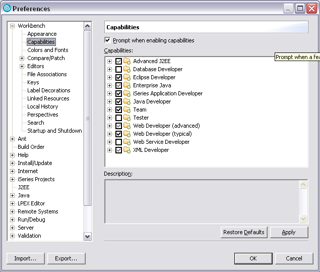Check the boxes for Team and Eclipse Developer then press OK.
We now need to define a connection to the Subversion repository that hosts this project. The first step in that process is to open the SVN Repository Exploring perspective. Choose Window -> Open Perspective -> Other. You will see a screen like this:

Select the SVN Repository Exploring perspective and click OK. You should see something like this:
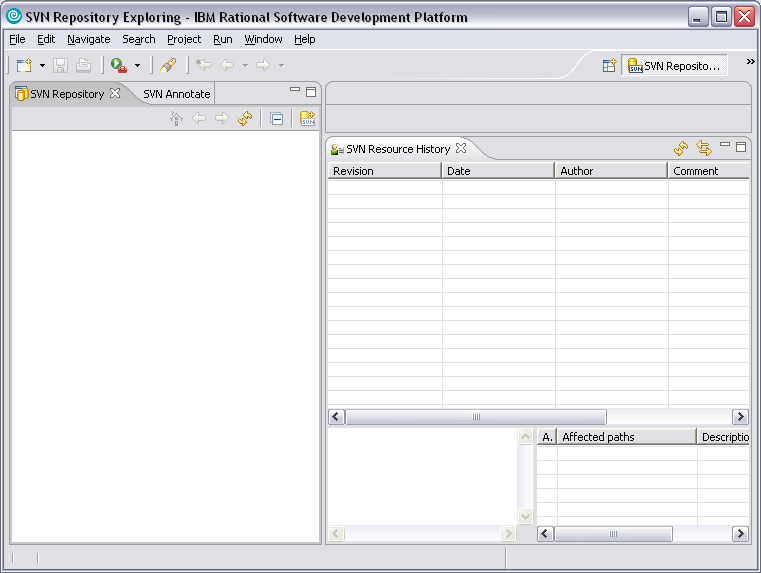Checkout the Source
Now you need to define a connection to the repository. Click this icon
 in the toolbar of the SVN Repository view. That will bring up the
Add SVN Repository dialog:
in the toolbar of the SVN Repository view. That will bring up the
Add SVN Repository dialog:
In the URL field, enter the value shown: http://support.softlanding.com/opensource/rse/trunk That URL is where this project is stored in the repository. Do not click OK yet. The next step is to specify the root URL of the Subversion repository. Click the Browse... button. You will see this screen.
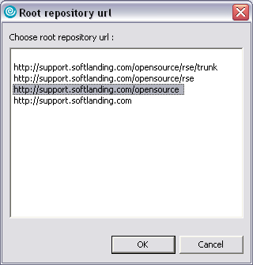Select the value that is shown: http://support.softlanding.com/opensource then click OK. That will bring you back to the dialog, which should now look like this:
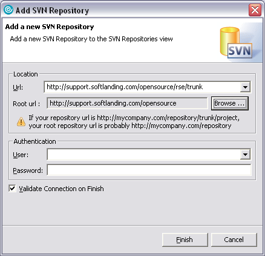Click OK to add the SVN Repository. Note that we could have just specified the root URL in both locations, but by specifying a location with the repository it just saves some repository navigation later. After you click OK, you should see your new connection in the list. Expand it to show the projects. It should look like this:
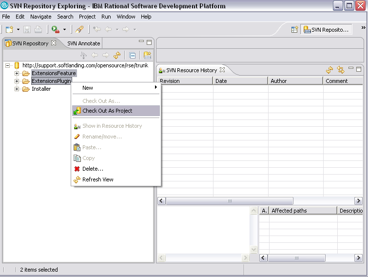As shown in the above screenshot, right-click on the two projects and choose Checkout As Project. This will checkout the source for the two projects from the repository and into your local WDSC workspace. When the checkout process is complete, use the same technique described earlier to switch to the Plug-in Development perspective. You should see something like this:
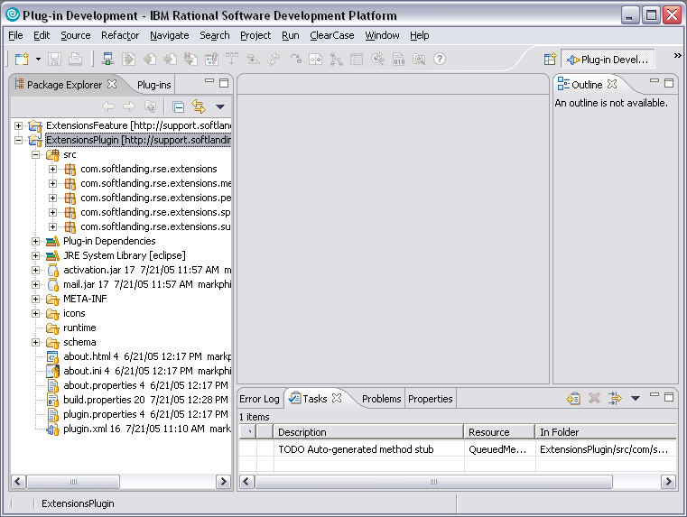Start Developing
At this point, the source for the project has been checked out to your workspace and you can start making changes. We will now show a very simple change to simply illustrate the plug-in development process within WDSC.
For this change, we are just going to modify the plug-in to write some text to System.out when the plug-in starts. This will be enough to show the development and testing process for a plug-in. To begin, open the source for the main plug-in class which is named ExtensionsPlugin.java and is stored in the com.softlanding.rse.extensions package.
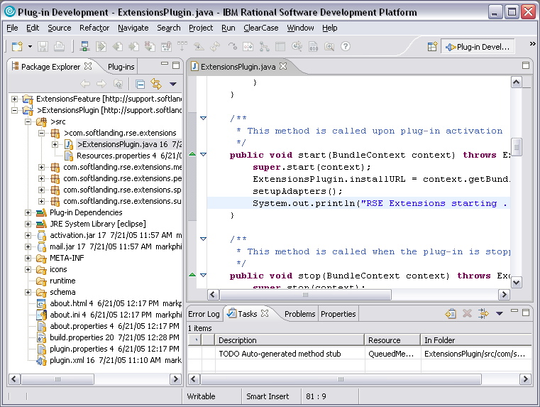As shown above, find the startup() method and add the code that is shown and click save. Our next step is to test the changes. WDSC includes something called a Run-time Workbench. This allows you to start a second instance of WDSC in which you can test any plug-in that you are developing. As shown in the next screen choose Run -> Run...
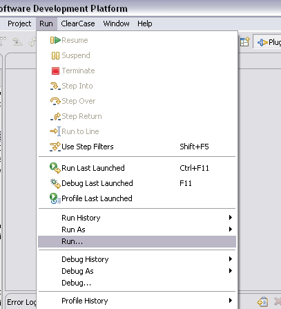This then brings up the Run dialog where we will define our launch configuration. Note, you only need to do this once. You can then just relaunch after this. You can also launch in Debug mode to debug your changes.
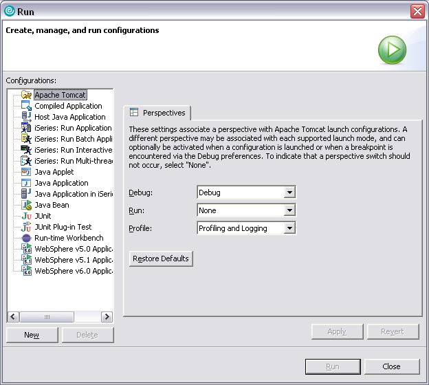In the above dialog, click on Run-time Workbench and then New.
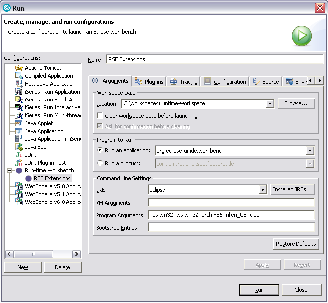You might want to customize the location of the run-time workspace, but other than that the defaults should all be good. Do NOT change the run-time workspace to point to your main workspace. Click Apply and then OK to Run. This will start a second instance of WDSC.
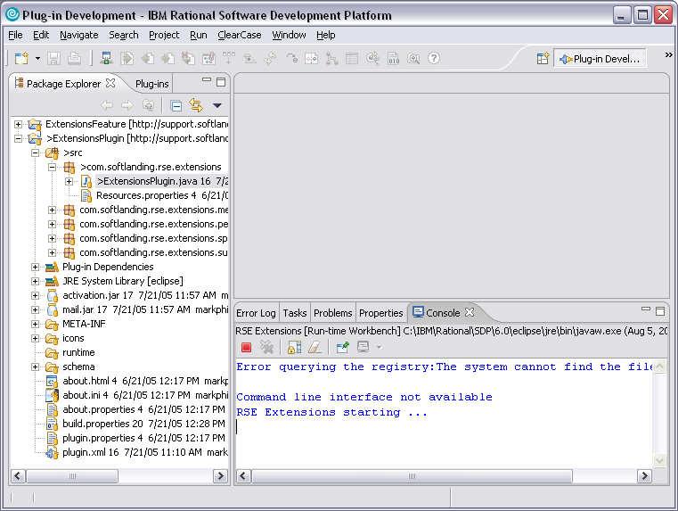If you were doing a real change, you would now likely test or debug it in the second version of WDSC. In this case, what we care about can be seen in the first instance in the Console view. As you see in the above screenshot, our message is being shown. If you do not have a Console view showing, just do Window -> Show View -> Other. It is located under the "Basic" grouping.
Submit Patches
If there is enough interest/demand, I will expand this section to include information on submitting patches. For now here are some simple instructions. Right-click on the project and choose Team -> Create Patch. Follow the wizard and save your patch to a text file. Then email the file to markp at softlanding dot com. You get the idea.
Thanks!